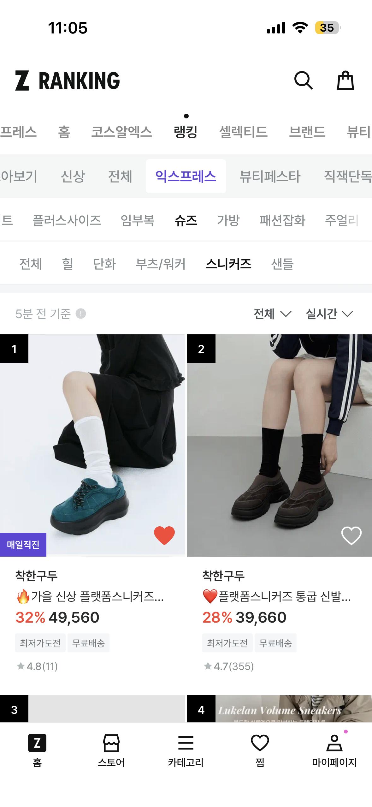

어코프님 전용 · 착한구두 성수 스페이스점 매장 방문 촬영 가이드예요. 장면 순서는 아래 6장면을 기본으로, 표현과 컷 배치는 함께 맞춰요.
템포가 제일 중요해요 매장 릴은 짧고 빠를수록 잘 봐요
- 전체 16초 안쪽을 목표로 해요. 아래 6장면을 다 넣어도 한 장면은 1~3초면 충분해요.
- 한 컷은 0.5~1.4초. 한 자리에서 오래 머무는 컷보다 짧은 컷을 이어 붙이는 편이 매장이 더 넓고 활기차 보여요.
- 외관은 0.5초만 잡고 바로 안으로 들어가요. 매장 정보(주소·층·가격)는 자막 카드 2~3컷으로 끝내요.
- 캐러셀로 올린다면 장면 순서 그대로 사진을 고르고, 아래 정지 컷 3장을 꼭 넣어 주세요.
정지 컷도 부탁드려요 캐러셀·광고용 사진 3장
릴스로 올리셔도 아래 3장은 사진으로 따로 찍어 함께 보내 주세요. 캐러셀로 올리시면 이 3장이 핵심 장이에요.


사진은 구도 참고용이에요.
찍지 않을 것
- 외관·간판을 3초 넘게 보여주기
- 아카이브존 공간 전체를 넓게 찍기 · 가격표와 신발, 매대만 가까이 잡아요
- “전부 9,900원”처럼 매장 전체나 이번 부츠가 9,900원으로 들리는 자막·멘트
- 손님이 없어 보이는 텅 빈 전경 · 사람이 있을 때 찍거나 진열대 위주로 잡아요
- 탈의실 거울 셀피 · 진열대가 뒤에 보이는 플로어 거울을 써요
필수 외관 0.5초 → 1층 한옥 쇼룸 내부 → 예쁜 신발 진열까지 3컷 안에.
필수 가격 소구 자막을 첫 화면에 크게.
- “성수에 9,900원 아카이브존까지 있는 신발 매장”
- “한옥 쇼룸부터 지하까지, 성수 신발 매장 다녀옴”
- “성수 가면 꼭 들르는 신발 매장”
필수 부츠 착샷 2~3컷을 빠르게 이어요. 한 컷 1초 안쪽.
- “요즘 신는 부츠 여기서 다 찾았어요”
- “신어보면 바로 알아요”
필수 9,900원 가격표와 신발이 한 화면에 같이 보이는 컷만.
금지 아카이브존 공간 전체를 넓게 찍지 않아요. 9,900원은 아카이브존 균일가예요. 이번 부츠 3종은 9,900원이 아니라서 “전부 9,900원”처럼 들리는 자막은 쓰지 않아요.
- “지하엔 9,900원 아카이브존까지”
- “아카이브존은 9,900원 균일가”
필수 신상이 가장 예쁘게 보이는 장면 2~3개. 진열대는 따라 걸으며 순서대로 훑어요.
- “이번 시즌 신상이 진짜 찐인데”
이번에 소개할 부츠 · 세 켤레
세 켤레 모두 보내 드려요. 색상·사이즈는 따로 여쭤볼게요. 팔로워 20% 할인코드와 제품 링크는 업로드 후 댓글·DM으로 안내해 주세요. 할인코드는 추후 알려 드려요.
 페탈75,900원커스텀 멀티웨이 롱부츠길이를 바꿔 신는 롱부츠예요. 길이 바꾸는 손 장면과 전신 비율을 보여줘요.제품 상세 ↗
페탈75,900원커스텀 멀티웨이 롱부츠길이를 바꿔 신는 롱부츠예요. 길이 바꾸는 손 장면과 전신 비율을 보여줘요.제품 상세 ↗ 블래티79,900원슬라우치 부츠자연스럽게 주름지는 통이 포인트예요. 옆에서 본 주름과 스커트·데님 코디를 보여줘요.제품 상세 ↗
블래티79,900원슬라우치 부츠자연스럽게 주름지는 통이 포인트예요. 옆에서 본 주름과 스커트·데님 코디를 보여줘요.제품 상세 ↗ 디케인109,000원폴딩 무스탕 롱부츠접어 신으면 길이가 바뀌는 무스탕 롱부츠예요. 접는 장면과 안쪽 퍼를 보여줘요.제품 상세 ↗
디케인109,000원폴딩 무스탕 롱부츠접어 신으면 길이가 바뀌는 무스탕 롱부츠예요. 접는 장면과 안쪽 퍼를 보여줘요.제품 상세 ↗사진을 누르면 공식 상품 상세로 이동해요. 모바일에서는 옆으로 넘겨 볼 수 있어요.
필수 부츠 3켤레, 한 켤레당 2~3컷. 한 켤레에 같은 구도만 반복하지 않아요.
필수 한 편 안에 앉아서 · 앞에서 · 옆에서 · 전신거울 네 구도가 모두 들어가요.
필수 부츠마다 위 제품 카드의 포인트를 1~2개 자막이나 멘트로 말해요.
- 페탈 · “길이 바꿔 신는 롱부츠, 하나로 두 가지 느낌”
- 블래티 · “자연스럽게 주름지는 슬라우치 핏”
- 디케인 · “접으면 길이가 바뀌는 무스탕 롱부츠”
랭킹 캡처 활용 요청
착한구두의 1위 이력을 보여주세요.
아래 랭킹 캡처를 후킹이나 부츠 소개 장면에 넣어 주세요. “무신사 1위 부츠를 만든 착한구두에서, 저는 이 부츠를 골랐어요.”처럼 자연스럽게 이어 주시면 좋겠어요. 삽입 위치와 길이는 자유롭게 정해 주세요.
캡처 활용 안내
플랫폼명·카테고리·1위 표시·착한구두 상품명이 함께 보이도록 잘라 주세요. 무신사 캡처는 페탈 부츠의 부츠/워커 상품 순위, 지그재그 캡처는 착한구두 스니커즈의 상품 순위예요. 브랜드 순위가 아니라 착한구두의 상품 1위 이력으로 보여 주세요.
착한구두 페탈 커스텀 멀티웨이 롱부츠원본 캡처 다운로드 ↓


착한구두 플랫폼 스니커즈 1·2위원본 캡처 다운로드 ↓

각 캡처에 표시된 시점·카테고리의 순위예요.
필수 매장 입구(간판이 보이게) + 계산 또는 쇼핑백 컷.
필수 마지막 자막에 할인코드·제품 링크는 댓글/DM 안내.
- “팔로워 20% 할인코드는 댓글에 남겨둘게요”
- “저장해 두고 성수 갈 때 들러보세요”
추가 컷 부탁드려요 신발만 보이는 정지 컷 · 2~3초
광고로 썼을 때 반응이 가장 좋았던 구도예요. 영상 중간이나 끝에 2~3초만 넣어 주시고, 이 컷은 자막·음악 없는 원본으로도 따로 보내 주세요. 밝은 바닥·벽 앞에서 무릎 아래만, 카메라와 발은 움직이지 않고 이번 부츠 한 켤레만 옆에서 담아 주세요. 세 켤레 각각 한 컷씩이면 더 좋아요.
업로드 전 체크리스트
- 첫 3초 안에 매장 내부와 “9,900원 아카이브존까지 있는 신발 매장”이 보이거나 들린다
- 외관은 1초 안쪽이고, 컷 대부분이 0.5~1.4초다
- 부츠 착샷이 2~3컷 있다
- 아카이브존은 가격표와 신발이 한 화면인 컷만 있다 · 공간 전경이 없다
- 부츠 3켤레가 각각 2~3컷, 앉아서·앞에서·옆에서·전신거울 네 구도가 한 편 안에 모두 있다
- 매장 입구(간판)와 계산·쇼핑백 컷으로 끝난다
- “부츠가 9,900원”으로 오해될 자막이 없다
다음 영상도 함께 더 좋게 만들어요
이번 영상에서 어떤 장면에 반응이 좋았는지 함께 살펴보고, 다음 협업에서는 더 좋은 영상을 만들어가고 싶어요. 업로드 후 시청 지표를 인사이트 화면 캡처로 공유해 주시면 큰 도움이 됩니다.
함께 살펴볼 지표
시청 유지 그래프 · 평균 시청 시간 · 완료율 · 유입 경로